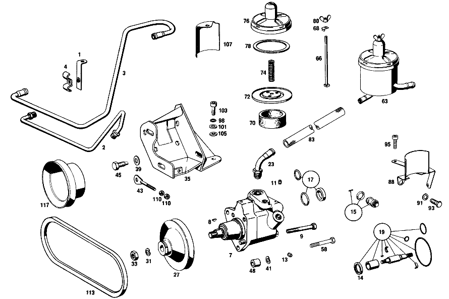

| № | Артикул | Название | Кол. | Примечание | Ограничение |
|---|---|---|---|---|---|
| 1 | A 111 460 04 35 | ДЕРЖАТЕЛЬ | 2 | Рулевое управление: Вправо Z 10.715/01, Z 10.715/02, Z 10.715/03, Z 10.715/05 | |
| 2 | A 111 460 03 24 | ПРОВОД | - | Рулевое управление: Вправо Z 10.715/01, Z 10.715/02, Z 10.715/03, Z 10.715/05 | |
| 2 | A 130 460 01 24 | ПРОВОД | 1 | Рулевое управление: Вправо Z 10.715/01, Z 10.715/02, Z 10.715/03, Z 10.715/05 | |
| 3 | A 111 460 05 24 | ПРОВОД | 1 | Рулевое управление: Вправо Z 10.715/01, Z 10.715/02, Z 10.715/03, Z 10.715/05 | |
| 4 | A 121 995 01 32 | ХОМУТ | - | Рулевое управление: Вправо Z 10.715/01, Z 10.715/02, Z 10.715/03, Z 10.715/05 | |
| 4 | A 121 995 02 32 | ХОМУТ | 2 | Рулевое управление: Вправо Z 10.715/01, Z 10.715/02, Z 10.715/03, Z 10.715/05 | |
| 7 | A 127 460 12 80 | НАСОС ГИДРАВЛ. | 1 | Z 10.715/01, Z 10.715/02, Z 10.715/03, Z 10.715/05 [002] FROM ENGINE 129.980 10/50,12/52 030738 129.980 20/60,22/62 028862 [697] ДЕТАЛЬ ПОСТАВЛЯЕТСЯ ТОЛЬКО/ИЛИ ТАКЖЕ КАК ЗАП.ЧАСТЬ | |
| 8 | A 000 991 06 68 | - Призматическая шпонка | 1 | Z 10.715/01, Z 10.715/02, Z 10.715/03, Z 10.715/05 | |
| 9 | A 000 236 00 71 | - БОЛТ | 3 | Z 10.715/01, Z 10.715/02, Z 10.715/03, Z 10.715/05 | |
| 11 | A 000 990 74 67 | - УПЛОТНИТЕЛЬНЫЙ КОНУС | 1 | Z 10.715/01, Z 10.715/02, Z 10.715/03, Z 10.715/05 | |
| 13 | A 000 990 75 67 | - Уплотнительный конус | 1 | Z 10.715/01, Z 10.715/02, Z 10.715/03, Z 10.715/05 | |
| 14 | A 004 997 12 47 | - УПЛОТНИТ. КОЛЬЦО | - | Z 10.715/01, Z 10.715/02, Z 10.715/03, Z 10.715/05 | |
| 14 | A 006 997 02 47 | - Уплотнительное кольцо | - | Z 10.715/01, Z 10.715/02, Z 10.715/03, Z 10.715/05 | |
| 14 | A 018 997 60 47 | - Уплотнительное кольцо | 1 | Z 10.715/01, Z 10.715/02, Z 10.715/03, Z 10.715/05 | |
| 15 | A 000 586 00 46 | ремкомплект | 1 | КЛАПАН НАПОРНЫЙ Z 10.715/01, Z 10.715/02, Z 10.715/03, Z 10.715/05 | |
| 17 | A 000 586 31 46 | набор уплотнений | 1 | КОМПЛЕКТ УПЛОТНИТ.ПРОКЛАДОК ЦИЛИНДРИЧ. ПРИВОДНОГО ВАЛА Z 10.715/01, Z 10.715/02, Z 10.715/03, Z 10.715/05 | |
| 19 | A 000 586 56 46 | ремкомплект | 1 | КЛИНОРЕМЕН. ПРИВОД Z 10.715/01, Z 10.715/02, Z 10.715/03, Z 10.715/05 | |
| 23 | A 127 460 00 24 | ПРОВОД | 1 | Z 10.715/01, Z 10.715/02, Z 10.715/03, Z 10.715/05 | |
| 27 | A 127 466 03 15 | ШКИВ | 1 | (КОНИЧЕСКОЕ ОТВЕРСТИЕ) Z 10.715/01, Z 10.715/02, Z 10.715/03, Z 10.715/05 [002] FROM ENGINE 129.980 10/50,12/52 030738 129.980 20/60,22/62 028862 | |
| 31 | N 000137 014201 | Пружинная шайба | 1 | Z 10.715/01, Z 10.715/02, Z 10.715/03, Z 10.715/05 | |
| 33 | N 000934 014019 | Гайка | - | Z 10.715/01, Z 10.715/02, Z 10.715/03, Z 10.715/05 | |
| 33 | N 308673 014001 | Шестигранная гайка | 1 | M14X1.5 Z 10.715/01, Z 10.715/02, Z 10.715/03, Z 10.715/05 [002] FROM ENGINE 129.980 10/50,12/52 030738 129.980 20/60,22/62 028862 | |
| 35 | A 129 460 00 35 | ДЕРЖАТЕЛЬ | 1 | Z 10.715/01, Z 10.715/02, Z 10.715/03, Z 10.715/05 | |
| 39 | N 000125 010504 | ШАЙБА | 3 | Z 10.715/01, Z 10.715/02, Z 10.715/03, Z 10.715/05 | |
| 41 | N 000137 010201 | Пружинная шайба | 1 | Z 10.715/01, Z 10.715/02, Z 10.715/03, Z 10.715/05 | |
| 43 | A 180 466 01 74 | БОЛТ НАТЯЖНОЙ | 1 | Z 10.715/01, Z 10.715/02, Z 10.715/03, Z 10.715/05 [002] FROM ENGINE 129.980 10/50,12/52 030738 129.980 20/60,22/62 028862 | |
| 45 | A 127 990 01 01 | БОЛТ | 1 | Z 10.715/01, Z 10.715/02, Z 10.715/03, Z 10.715/05 [002] FROM ENGINE 129.980 10/50,12/52 030738 129.980 20/60,22/62 028862 | |
| 48 | A 180 466 03 51 | ДИСТАНЦИОННОЕ КОЛЬЦО | 1 | 13 MM Z 10.715/01, Z 10.715/02, Z 10.715/03, Z 10.715/05 | |
| 58 | N 000931 010111 | Винт | - | Z 10.715/01, Z 10.715/02, Z 10.715/03, Z 10.715/05 | |
| 58 | N 304017 010032 | Винт с 6-гранной головкой | 1 | Z 10.715/01, Z 10.715/02, Z 10.715/03, Z 10.715/05 | |
| 63 | A 127 460 03 83 | МАСЛЯНЫЙ БАЧОК | 1 | Z 10.715/01, Z 10.715/02, Z 10.715/03, Z 10.715/05 | |
| 66 | A 000 990 41 33 | - БОЛТ | 1 | Z 10.715/01, Z 10.715/02, Z 10.715/03, Z 10.715/05 | |
| 68 | A 000 466 03 73 | - Стопорная шайба | 1 | Z 10.715/01, Z 10.715/02, Z 10.715/03, Z 10.715/05 | |
| 70 | A 000 236 00 55 | - Фильтр | 1 | Z 10.715/01, Z 10.715/02, Z 10.715/03, Z 10.715/05 | |
| 72 | A 000 236 00 76 | - Крышка | 1 | Z 10.715/01, Z 10.715/02, Z 10.715/03, Z 10.715/05 | |
| 74 | A 001 993 14 01 | - пружина | 1 | Z 10.715/01, Z 10.715/02, Z 10.715/03, Z 10.715/05 | |
| 76 | A 000 460 12 82 | - КРЫШКА | 1 | Z 10.715/01, Z 10.715/02, Z 10.715/03, Z 10.715/05 | |
| 78 | A 000 236 00 80 | - Уплотнительная прокладка | 1 | Z 10.715/01, Z 10.715/02, Z 10.715/03, Z 10.715/05 | |
| 80 | N 000315 006001 | - Гайка | 1 | Z 10.715/01, Z 10.715/02, Z 10.715/03, Z 10.715/05 | |
| 83 | A 006 997 09 82 | Шланг | 1 | Z 10.715/01, Z 10.715/02, Z 10.715/03, Z 10.715/05 [404] ЗАКАЗЫВАТЬ ПОГОННЫМИ МЕТРАМИ | |
| 88 | A 127 460 08 35 | ДЕРЖАТЕЛЬ | 1 | Z 10.715/01, Z 10.715/02, Z 10.715/03, Z 10.715/05 | |
| 91 | N 007603 012104 | Уплотнительное кольцо | 1 | Z 10.715/01, Z 10.715/02, Z 10.715/03, Z 10.715/05 | |
| 93 | A 110 052 01 71 | БОЛТ | 1 | Z 10.715/01, Z 10.715/02, Z 10.715/03, Z 10.715/05 | |
| 95 | N 000912 008098 | Цилиндрич. винт | 1 | Z 10.715/01, Z 10.715/02, Z 10.715/03, Z 10.715/05 | |
| 98 | N 000127 008203 | Пружинное кольцо | 1 | Z 10.715/01, Z 10.715/02, Z 10.715/03, Z 10.715/05 | |
| 101 | N 000433 008406 | Шайба | 1 | Z 10.715/01, Z 10.715/02, Z 10.715/03, Z 10.715/05 | |
| 103 | N 000912 008111 | Цилиндрич. винт | - | Z 10.715/01, Z 10.715/02, Z 10.715/03, Z 10.715/05 | |
| 103 | N 000000 000190 | Цилиндрич. винт | 1 | Z 10.715/01, Z 10.715/02, Z 10.715/03, Z 10.715/05 | |
| 105 | A 180 155 08 51 | Проставочное кольцо | 1 | Z 10.715/01, Z 10.715/02, Z 10.715/03, Z 10.715/05 | |
| 107 | A 111 492 02 30 | ЗАЩИТНАЯ ПАНЕЛЬ | 1 | Z 10.715/01, Z 10.715/02, Z 10.715/03, Z 10.715/05 | |
| 110 | N 000934 006007 | Гайка | 2 | Z 10.715/01, Z 10.715/02, Z 10.715/03, Z 10.715/05 | |
| 113 | N 007753 012500 | Клиновой ремень | 1 | Z 10.715/01, Z 10.715/02, Z 10.715/03, Z 10.715/05 | |
| 117 | A 108 466 05 15 | ШКИВ | 1 | Z 10.715/01, Z 10.715/02 | |
| 125 | A 189 070 00 46 | ЦИЛИНДР ПОД ДАВЛЕНИЕМ | 1 | Z 10.715/01, Z 10.715/02, Z 10.715/03, Z 10.715/05 | |
| 128 | A 189 075 01 33 | - ПОРШЕНЬ | 1 | Z 10.715/01, Z 10.715/02, Z 10.715/03, Z 10.715/05 | |
| 131 | A 002 997 33 46 | - УПЛОТНИТ. КОЛЬЦО | 1 | Z 10.715/01, Z 10.715/02, Z 10.715/03, Z 10.715/05 | |
| 133 | A 189 070 02 76 | - ТЯГА | 1 | Z 10.715/01, Z 10.715/02, Z 10.715/03, Z 10.715/05 | |
| 135 | A 189 993 08 01 | - ПРУЖИНА | 1 | Z 10.715/01, Z 10.715/02, Z 10.715/03, Z 10.715/05 | |
| 138 | A 189 075 02 71 | - БОЛТ | 1 | Z 10.715/01, Z 10.715/02, Z 10.715/03, Z 10.715/05 | |
| 140 | A 189 075 00 73 | - ПРЕДОХРАНИТЕЛЬ | 1 | Z 10.715/01, Z 10.715/02, Z 10.715/03, Z 10.715/05 | |
| 143 | N 000084 004101 | - Винт | 1 | Z 10.715/01, Z 10.715/02, Z 10.715/03, Z 10.715/05 | |
| 146 | N 000934 005008 | - Гайка | 1 | M5 Z 10.715/01, Z 10.715/02, Z 10.715/03, Z 10.715/05 | |
| 148 | A 189 075 00 39 | - КОНЦ. ЭЛЕМЕНТ | 1 | Z 10.715/01, Z 10.715/02, Z 10.715/03, Z 10.715/05 | |
| 151 | N 007603 014100 | - Уплотнительное кольцо | 1 | 14X18\-AL Z 10.715/01, Z 10.715/02, Z 10.715/03, Z 10.715/05 | |
| 153 | A 189 997 10 72 | - ШТУЦЕР | 1 | Z 10.715/01, Z 10.715/02, Z 10.715/03, Z 10.715/05 | |
| 156 | A 129 072 04 40 | ДЕРЖАТЕЛЬ | 1 | Z 10.715/01, Z 10.715/03 | |
| 159 | N 000933 006102 | Винт | 2 | Z 10.715/01, Z 10.715/02, Z 10.715/03, Z 10.715/05 | |
| 163 | A 129 070 03 22 | РЫЧАГ | 1 | Z 10.715/01, Z 10.715/03 | |
| 166 | A 129 070 01 40 | ДЕРЖАТЕЛЬ | 1 | Z 10.715/02, Z 10.715/05 | |
| 169 | N 000912 008009 | Винт | - | M8X20\-8.8 Z 10.715/02, Z 10.715/05 | |
| 169 | N 000912 008200 | Цилиндрич. винт | - | M 8X20\-8.8 Z 10.715/02, Z 10.715/05 | |
| 169 | N 000912 008219 | Цилиндрич. винт | 2 | M8X20 Z 10.715/02, Z 10.715/05 | |
| 172 | A 189 990 05 51 | ГАЙКА | 1 | Z 10.715/02, Z 10.715/05 | |
| 174 | A 189 070 00 21 | РЫЧАГ | 1 | Z 10.715/02, Z 10.715/05 | |
| 182 | A 129 180 02 20 | МАСЛОПРОВОД | 1 | Рулевое управление: Влево Z 10.715/01, Z 10.715/02, Z 10.715/03, Z 10.715/05 | |
| 190 | A 129 078 04 41 | ДЕРЖАТЕЛЬ | 1 | Рулевое управление: Влево Z 10.715/01, Z 10.715/02, Z 10.715/03, Z 10.715/05 | |
| N 000137 008204 | Пружинная шайба | 2 | Рулевое управление: Вправо Z 10.715/01, Z 10.715/02, Z 10.715/03, Z 10.715/05 | ||
| N 000912 006002 | Винт | 2 | Рулевое управление: Вправо Z 10.715/01, Z 10.715/02, Z 10.715/03, Z 10.715/05 | ||
| N 007980 006003 | Пружинное кольцо | 2 | Рулевое управление: Вправо Z 10.715/01, Z 10.715/02, Z 10.715/03, Z 10.715/05 | ||
| A 127 460 05 80 | НАСОС ГИДРАВЛ. | - | Z 10.715/01, Z 10.715/02, Z 10.715/03, Z 10.715/05 [001] UP TO ENGINE 129.980 10/50,12/52 030737 129.950 20/60,22/62 028861 | ||
| A 001 990 43 01 | - болт | 1 | Z 10.715/01, Z 10.715/02, Z 10.715/03, Z 10.715/05 | ||
| A 000 997 74 45 | - Кольцевая прокладка | 1 | КЛАПАН НАПОРНЫЙ TO 127 460 12 80 Z 10.715/01, Z 10.715/02, Z 10.715/03, Z 10.715/05 | ||
| A 000 586 01 46 | РЕМКОМПЛЕКТ | - | Z 10.715/01, Z 10.715/02, Z 10.715/03, Z 10.715/05 | ||
| A 000 586 55 46 | РЕМКОМПЛЕКТ | - | КОМПЛЕКТ УПЛОТНИТ.ПРОКЛАДОК КОНИЧЕСКОГО ПРИВОДНОГО ВАЛА Z 10.715/01, Z 10.715/02, Z 10.715/03, Z 10.715/05 [402] БОЛЬШЕ НЕ ПОСТАВЛЯЕТСЯ | ||
| A 000 586 72 46 | ремкомплект | 1 | GASKET KIT CONICAL DRIVE SHAFT Z 10.715/01, Z 10.715/02, Z 10.715/03, Z 10.715/05 | ||
| A 000 586 32 46 | РЕМКОМПЛЕКТ | - | Z 10.715/01, Z 10.715/02, Z 10.715/03, Z 10.715/05 | ||
| A 000 586 07 46 | ремкомплект | 1 | НАСОСНЫЙ ЭЛЕМЕНТ Z 10.715/01, Z 10.715/02, Z 10.715/03, Z 10.715/05 [417] БОЛЬШЕ НЕ ПОСТАВЛЯЕТСЯ, ЗАКАЗЫВАТЬ КОМПЛЕКТ ПОСТАВКИ | ||
| A 127 466 02 15 | ШКИВ | 1 | (ЦИЛИНДРИЧЕСКОЕ ОТВЕРСТИЕ) Z 10.715/01, Z 10.715/02, Z 10.715/03, Z 10.715/05 [001] UP TO ENGINE 129.980 10/50,12/52 030737 129.950 20/60,22/62 028861 | ||
| A 189 990 01 51 | гайка | 1 | Z 10.715/01, Z 10.715/02, Z 10.715/03, Z 10.715/05 [001] UP TO ENGINE 129.980 10/50,12/52 030737 129.950 20/60,22/62 028861 | ||
| A 127 460 06 35 | ДЕРЖАТЕЛЬ | - | Z 10.715/01, Z 10.715/02, Z 10.715/03, Z 10.715/05 | ||
| A 180 466 00 74 | БОЛТ НАТЯЖНОЙ | 1 | Z 10.715/01, Z 10.715/02, Z 10.715/03, Z 10.715/05 [001] UP TO ENGINE 129.980 10/50,12/52 030737 129.950 20/60,22/62 028861 | ||
| N 000931 010228 | БОЛТ | 1 | Z 10.715/01, Z 10.715/02, Z 10.715/03, Z 10.715/05 [001] UP TO ENGINE 129.980 10/50,12/52 030737 129.950 20/60,22/62 028861 | ||
| N 000933 010164 | Винт | 1 | Z 10.715/01, Z 10.715/02, Z 10.715/03, Z 10.715/05 [002] FROM ENGINE 129.980 10/50,12/52 030738 129.980 20/60,22/62 028862 | ||
| A 180 466 02 51 | ДИСТАНЦИОННОЕ КОЛЬЦО | 1 | 12,75 MM Z 10.715/01, Z 10.715/02, Z 10.715/03, Z 10.715/05 | ||
| A 180 466 01 51 | ДИСТАНЦИОННОЕ КОЛЬЦО | 1 | 12,50 MM Z 10.715/01, Z 10.715/02, Z 10.715/03, Z 10.715/05 | ||
| A 180 466 06 51 | ДИСТАНЦИОННОЕ КОЛЬЦО | 1 | 12,25 MM Z 10.715/01, Z 10.715/02, Z 10.715/03, Z 10.715/05 | ||
| A 180 466 07 51 | ДИСТАНЦИОННОЕ КОЛЬЦО | 1 | 12 MM Z 10.715/01, Z 10.715/02, Z 10.715/03, Z 10.715/05 | ||
| A 180 466 08 51 | ДИСТАНЦИОННОЕ КОЛЬЦО | 1 | 11,75 MM Z 10.715/01, Z 10.715/02, Z 10.715/03, Z 10.715/05 [402] БОЛЬШЕ НЕ ПОСТАВЛЯЕТСЯ | ||
| A 180 466 09 51 | ДИСТАНЦИОННОЕ КОЛЬЦО | 1 | 11,50 MM Z 10.715/01, Z 10.715/02, Z 10.715/03, Z 10.715/05 [402] БОЛЬШЕ НЕ ПОСТАВЛЯЕТСЯ | ||
| A 180 466 10 51 | ДИСТАНЦИОННОЕ КОЛЬЦО | 1 | 11,25 MM Z 10.715/01, Z 10.715/02, Z 10.715/03, Z 10.715/05 | ||
| N 912004 010102 | Пружинное кольцо | 2 | Z 10.715/01, Z 10.715/02, Z 10.715/03, Z 10.715/05 | ||
| N 000912 010005 | Цилиндрич. винт | 1 | Z 10.715/01, Z 10.715/02, Z 10.715/03, Z 10.715/05 | ||
| N 000934 010009 | Гайка | - | Z 10.715/01, Z 10.715/02, Z 10.715/03, Z 10.715/05 | ||
| N 304032 010002 | Шестигранная гайка | 1 | M10 Z 10.715/01, Z 10.715/02, Z 10.715/03, Z 10.715/05 | ||
| N 916001 020000 | ХОМУТ | 2 | Z 10.715/01, Z 10.715/02, Z 10.715/03, Z 10.715/05 | ||
| N 000137 008204 | Пружинная шайба | NB | Z 10.715/01, Z 10.715/02, Z 10.715/03, Z 10.715/05 | ||
| A 127 052 00 71 | БОЛТ | - | Z 10.715/01, Z 10.715/02, Z 10.715/03, Z 10.715/05 | ||
| N 900288 094102 | Хомут | 1 | OIL RESERVOIR TO SUPPORT) Z 10.715/01, Z 10.715/02, Z 10.715/03, Z 10.715/05 | ||
| A 189 072 00 72 | ГАЙКА | 1 | Z 10.715/02, Z 10.715/05 | ||
| N 000125 005306 | ШАЙБА | 1 | Z 10.715/02, Z 10.715/05 | ||
| N 000933 005058 | Винт | 1 | Z 10.715/02, Z 10.715/05 | ||
| N 006799 004001 | Стопорная шайба | 1 | Z 10.715/02, Z 10.715/05 | ||
| A 129 180 04 20 | МАСЛОПРОВОД | 1 | Рулевое управление: Вправо Z 10.715/01, Z 10.715/03 | ||
| A 129 180 05 20 | МАСЛОПРОВОД | 1 | Рулевое управление: Вправо Z 10.715/02, Z 10.715/05 | ||
| A 129 078 00 85 | КРОНШТЕЙН ТРУБЫ | 6 | Z 10.715/01, Z 10.715/02, Z 10.715/03, Z 10.715/05 | ||
| N 000931 005016 | БОЛТ | 2 | Z 10.715/01, Z 10.715/02, Z 10.715/03, Z 10.715/05 | ||
| N 000931 005024 | БОЛТ | 1 | Рулевое управление: Влево Z 10.715/01, Z 10.715/02, Z 10.715/03, Z 10.715/05 | ||
| N 000934 005008 | Гайка | 3 | M5 Z 10.715/01, Z 10.715/02, Z 10.715/03, Z 10.715/05 |
Позиций: 118 · подписано на схемах: 76 · колесо — плавный зум в курсор, перетаскивание — пан, двойной клик — зум, клик по артикулу — скопировать · наведите на строку или цифру на схеме — подсветка связки, клик — закрепить.